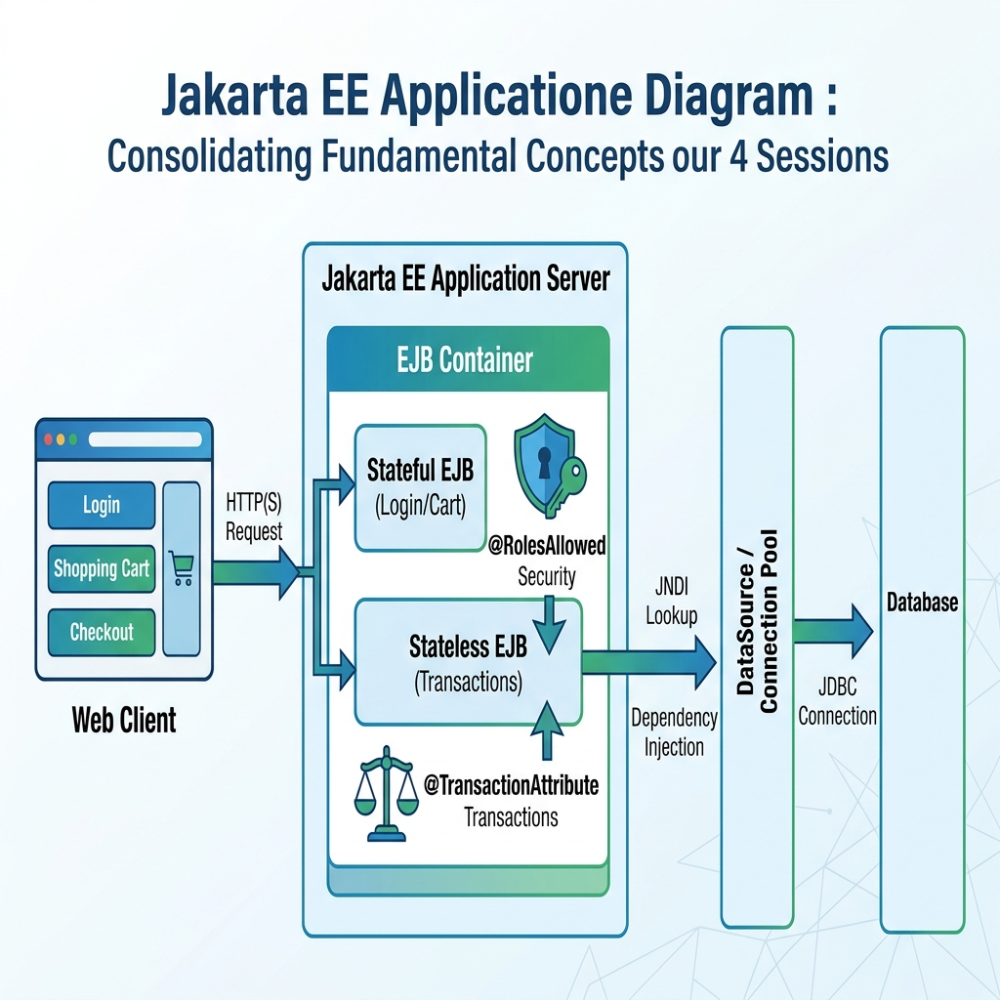

<title>Try It Yourself — Review &amp; Consolidation (Sessions 1 to 4)</title>
<meta name="viewport" content="width=device-width, initial-scale=1">
<meta name="description" content="Try It Yourself Review for Sessions 1–4: a step-by-step lab that traces one request through Session Beans, JNDI DataSources, Transactions and Security, then diagnoses the three integration errors beginners actually hit.">
<link rel="stylesheet" href="assets/css/styles.css">
<script>window.PAGE = "s04t";</script>

<main class="page">

  <h1>Try It Yourself · Review &amp; Consolidation (Sessions 1–4)</h1>
  <p class="lede">Sessions 1 to 4 each taught you one pillar of Jakarta EJB: <strong>Session Beans</strong>,
    <strong>JNDI resources and DataSources</strong>, <strong>transactions</strong>, and
    <strong>enterprise security</strong>. On their own, each one is easy. The hard part — the part that
    actually pays your salary — is making all four work together in one request, and knowing what to do
    when the server refuses. That is what this page is for. You are not going to read a summary. You are
    going to trace one real request through every layer, run it here in your browser, then diagnose the
    three integration errors that catch everybody.</p>

  <div class="callout callout--key"><span class="callout__i">✓</span>
    <div class="callout__b"><b>Four promises before we start</b>
      <ol style="margin:.6rem 0 0;padding-left:1.2rem">
        <li><strong>No jargon without a translation.</strong> Every heavy word gets a plain-English box
          the moment it appears.</li>
        <li><strong>Every step is executable.</strong> Each one gives you the exact command or the exact
          code to type — nothing is left as “and then do the usual thing”.</li>
        <li><strong>Every step is checkable.</strong> After each step you are told what you should see
          if it worked. If you do not see it, you are not stuck — there is a troubleshooting block.</li>
        <li><strong>By the end you will have proved the pipeline works</strong> and fixed all three
          errors on purpose, so they stop being frightening.</li>
      </ol>
    </div>
  </div>

  <h2>What you will be able to do by the end</h2>
  <p>Not eight objectives copied from a manual — six things, in plain words:</p>
  <div class="tablewrap"><table>
    <thead><tr><th>By the end you can…</th><th>Where it is taught</th></tr></thead>
    <tbody>
      <tr><td>Draw the six stops a single request makes, from browser to database and back</td><td>Part 1</td></tr>
      <tr><td>Say which tier is responsible for state, logic, security and data — and why they are separate</td><td>Part 1</td></tr>
      <tr><td>Recognise the three integration errors by their exact class name and message</td><td>Part 2</td></tr>
      <tr><td>Find the real cause of a rollback instead of being fooled by the rollback message</td><td>Part 2</td></tr>
      <tr><td>Read the end-to-end code and point at the line where each container service is declared</td><td>Part 3</td></tr>
      <tr><td>Answer the exam-style questions on Sessions 1 to 4</td><td>Checkpoints &amp; the quiz</td></tr>
    </tbody>
  </table></div>

  <div class="callout"><span class="callout__i">📖</span>
    <div class="callout__b"><b>How to read this page</b>
      The small labels on the left of each block tell you what kind of block it is.
      <ul style="margin:.6rem 0 0">
        <li><code>// concept</code> — an explanation to read.</li>
        <li><code>// lab</code> — a numbered step with something to type and something to check.</li>
        <li><code>// try it</code> — press <strong>Run</strong> and watch the pipeline execute.</li>
        <li><code>// developer toolkit</code> — the debugging equipment, with used-on-real-servers commands.</li>
        <li><code>// checkpoint</code> — a self-test. Answers are hidden until you ask.</li>
        <li><code>// check yourself</code> — the quiz.</li>
        <li><code>// recap</code> — the one-line summary of everything.</li>
      </ul>
      Read it top to bottom the first time. Every part ends with a checkpoint, and each checkpoint
      assumes you did the step before it — so do not skip ahead.
    </div>
  </div>

  <div class="callout callout--key"><span class="callout__i">🎯</span>
    <div class="callout__b"><b>What this review consolidates</b>
      <ol style="margin:.6rem 0 0;padding-left:1.2rem">
        <li><strong>Synthesise the four isolated concepts</strong> into one multi-tier enterprise
          architecture — beans, resources, transactions and security seen as one system, not four
          topics.</li>
        <li><strong>Trace a whole request end to end:</strong> Web Client → Stateful Bean → Stateless
          Bean → JNDI DataSource → Database.</li>
        <li><strong>Diagnose and fix the top three production integration errors:</strong>
          <code>NameNotFoundException</code>, <code>EJBTransactionRolledbackException</code> and
          <code>EJBAccessException</code>.</li>
        <li><strong>Test yourself</strong> with the practical exercises and the quiz, so you leave with
          evidence you understood Sessions 1 to 4.</li>
      </ol>
    </div>
  </div>

  <hr>

  <!-- =====================================================================
       PART 1 — THE INTEGRATED ARCHITECTURE
       ===================================================================== -->

  <span class="eyebrow">concept</span>
  <h2>Part 1 · How the six pieces fit together</h2>

  <p>In enterprise engineering, beans and services never exist in isolation. They form a layered
    pipeline, and each layer has <em>one</em> job. Look at the picture first, then read the table under
    it — a diagram like this only helps once someone tells you how to read it.</p>

  <figure>
    
    <figcaption><b>Integrated Enterprise Flow:</b> Each layer has one distinct responsibility — State,
      Logic, Transaction/Security, and Data. A request always travels left to right; the answer travels
      back.</figcaption>
  </figure>

  <h3>1.1 One request, six stops</h3>
  <p>Follow a single click — “Transfer $350” — through the whole system. Six things happen, in this
    order:</p>

  <div class="tablewrap"><table>
    <thead><tr><th>Stop</th><th>Layer / Component</th><th>EJB Technology Used</th><th>Role in the system</th></tr></thead>
    <tbody>
      <tr>
        <td>1</td>
        <td><strong>Web Tier</strong></td>
        <td>Servlet / JSF Controller</td>
        <td>Handles the incoming HTTP request; looks up the Stateful bean via JNDI</td>
      </tr>
      <tr>
        <td>2</td>
        <td><strong>Client State</strong></td>
        <td><code>@Stateful</code> Session Bean</td>
        <td>Remembers user session state (logged-in username, shopping cart) across requests</td>
      </tr>
      <tr>
        <td>3</td>
        <td><strong>Business Tier</strong></td>
        <td><code>@Stateless</code> Session Bean</td>
        <td>Executes high-throughput business logic; pooled by the container</td>
      </tr>
      <tr>
        <td>4</td>
        <td><strong>Security Gate</strong></td>
        <td><code>@RolesAllowed("CUSTOMER")</code></td>
        <td>The container intercepts the call; verifies the client's identity before the method runs</td>
      </tr>
      <tr>
        <td>5</td>
        <td><strong>Transaction Boundary</strong></td>
        <td><code>@TransactionAttribute(REQUIRED)</code></td>
        <td>The container starts an ACID transaction; ensures all-or-nothing execution</td>
      </tr>
      <tr>
        <td>6</td>
        <td><strong>Data Access</strong></td>
        <td><code>@Resource DataSource</code></td>
        <td>The container injects a pre-warmed connection from the WildFly pool; the bean executes SQL</td>
      </tr>
    </tbody>
  </table></div>

  <div class="plainwords"><b>In plain words</b>
    <p>Stops 4 and 5 have no code of their own. They are <strong>gates</strong> the container installs
      around your method because you put a label on it. The security gate checks who is calling; the
      transaction gate wraps everything that follows in an all-or-nothing envelope.</p>
    <p>That is the whole trick of Jakarta EE: <em>stops 4 and 5 happen between the lines you wrote</em>.
      You cannot see them in the bean, but the container runs them every single time.</p>
  </div>

  <h3>1.2 Which tier remembers what</h3>
  <p>Beginners lose marks by mixing these up. Learn this one table and half the exam questions
    disappear:</p>
  <div class="tablewrap"><table>
    <thead><tr><th>Tier</th><th>Does it remember?</th><th>How long for?</th></tr></thead>
    <tbody>
      <tr><td><strong>Web Tier</strong></td><td>No</td><td>Nothing — it passes each request straight through</td></tr>
      <tr><td><strong>Stateful Bean</strong></td><td>Yes</td><td>For one client's conversation, until <code>@Remove</code> or a timeout</td></tr>
      <tr><td><strong>Stateless Bean</strong></td><td>No</td><td>Nothing survives a call — the instance goes back to the pool</td></tr>
      <tr><td><strong>DataSource</strong></td><td>The connection, not your data</td><td>Only until the connection returns to the pool</td></tr>
      <tr><td><strong>Database</strong></td><td>Yes</td><td>Forever — this is the only place data truly lives</td></tr>
    </tbody>
  </table></div>

  <div class="callout callout--analogy"><span class="callout__i">🏦</span>
    <div class="callout__b"><b>Analogy</b>
      A bank branch. The <strong>teller window</strong> (web tier) just passes you on. Your own
      <strong>account officer</strong> (stateful bean) remembers your file for the length of your visit.
      The <strong>cashier</strong> (stateless bean) serves whoever is next and forgets you instantly. The
      <strong>vault key cabinet</strong> (DataSource) hands out a key and takes it back. Only the
      <strong>ledger in the vault</strong> (database) keeps your money for good.</div>
  </div>

  <h3>1.3 Trace it yourself — before you read Part 3</h3>
  <p>Do this now, even though you have not seen the code yet. Predicting is how the picture sticks.</p>

  <ol class="steps">
    <li>
      <h4>Name the six stops out loud</h4>
      <p>Start at “browser sends the request” and finish at “row is updated in the database”. Say each
        stop and its one job.</p>
      <p><strong>You should be able to say:</strong> Web Tier → Stateful Bean (who is this?) → Stateless
        Bean (do the work) → Security Gate (are they allowed?) → Transaction Boundary (all or nothing) →
        DataSource (borrow a connection) — six stops — and then the row is updated in the Database.</p>
    </li>
    <li>
      <h4>Answer before you check: which stop knows the username?</h4>
      <p>Cover the table in 1.2 with your hand. Which component remembers that the person clicking is
        “Alice”? Write your answer down.</p>
      <p><strong>You should have written:</strong> the <strong>Stateful bean</strong> at stop 2. Nothing
        else in the pipeline remembers who the client is — the browser only sent a request, and the
        stateless bean and the pool forget immediately.</p>
    </li>
    <li>
      <h4>Answer before you check: which stop can refuse the request outright?</h4>
      <p>Which stop is allowed to stop the whole thing before a single line of your business logic
        runs?</p>
      <p><strong>You should have written:</strong> the <strong>Security Gate</strong> at stop 4. It
        checks the caller's role <em>before</em> the method is entered — which is exactly why a rejected
        caller sees <code>EJBAccessException</code> and not a half-finished payment. Stop 5 can also
        abort work, but only <em>after</em> it has started.</p>
    </li>
  </ol>

  <div class="checkpoint"><b>Checkpoint 1 · before you move on</b>
    <p>Answer out loud, in your own words. Then open the answers.</p>
    <ol>
      <li>Why is the Stateful bean a separate stop from the Stateless bean, rather than one bean doing
        both jobs?</li>
      <li>What does the container do at the security gate, and where is that decision written down?</li>
      <li>The user's <code>shoppingCart</code> field is held by a <code>@Stateful</code> bean. What
        happens to it when the user's session times out?</li>
    </ol>
    <details>
      <summary><strong>Show answers</strong></summary>
      <ol>
        <li>Because state is <strong>expensive and personal</strong> — one instance per user — while
          business logic must be <strong>shared and pooled</strong> to serve thousands of users. Mixing
          them means either paying for state you do not need or losing state you do.</li>
        <li>It checks whether the caller holds a role named in <code>@RolesAllowed</code>, and refuses
          the call before the method body runs. The decision is written <em>on the method</em> as an
          annotation, not in hand-written <code>if</code> statements.</li>
        <li>It is discarded, and the bean instance is destroyed. Conversational state is not permanent —
          only the database survives.</li>
      </ol>
    </details>
  </div>

  <hr>

  <!-- =====================================================================
       PART 2 — THE THREE INTEGRATION FAULTS
       ===================================================================== -->

  <span class="eyebrow">developer toolkit</span>
  <h2>Part 2 · The three errors you will actually hit</h2>

  <p>Wiring components across tiers always produces integration errors; that is normal, not failure. If
    you can name these three on sight, you will look like the person who has done this before. First,
    learn the one skill that solves all of them.</p>

  <div class="callout callout--key"><span class="callout__i">🔎</span>
    <div class="callout__b"><b>How to read a WildFly stack trace, in three moves</b>
      <ol style="margin:.6rem 0 0;padding-left:1.2rem">
        <li><strong>Read the top line.</strong> It names the exception that reached your code — that is
          the <em>symptom</em>, not always the cause.</li>
        <li><strong>Scroll down to the first <code>Caused by:</code> line.</strong> That is the real
          problem. There can be several; the deepest one is the root.</li>
        <li><strong>Fix that line, not the symptom.</strong> Then rebuild and redeploy. Most of the time
          the top-line message changes or disappears.</li>
      </ol>
    </div>
  </div>

  <h3>2.1 The three faults, side by side</h3>
  <p>Read the symptom, then the cause, then the fix. These are the three you will meet in real
    work.</p>

  <div class="callout callout--mistake"><span class="callout__i">1️⃣</span>
    <div class="callout__b"><b>Fault 1: <code>javax.naming.NameNotFoundException</code></b>
      <p style="margin:.3rem 0"><strong>Symptom:</strong> <code>NameNotFoundException: hello-ejb/PaymentProcessorBean -- service jboss.naming.context...</code></p>
      <p style="margin:.3rem 0"><strong>Root Cause:</strong> The client requested a JNDI string that does
        not match what WildFly registered at deployment time — usually a typo, a missing interface
        suffix, or the wrong namespace.</p>
      <p style="margin:.3rem 0"><strong>Fix:</strong> Check the WildFly boot log during deployment.
        WildFly prints lines starting with <code>java:global/...</code>. Copy the exact string into your
        <code>lookup()</code>.</p>
    </div>
  </div>

  <div class="callout callout--mistake"><span class="callout__i">2️⃣</span>
    <div class="callout__b"><b>Fault 2: <code>jakarta.ejb.EJBTransactionRolledbackException</code></b>
      <p style="margin:.3rem 0"><strong>Symptom:</strong> <code>EJBTransactionRolledbackException: Transaction rolled back</code></p>
      <p style="margin:.3rem 0"><strong>Root Cause:</strong> An unhandled runtime exception occurred
        inside a transactional EJB method, so the container aborted and rolled the transaction back
        automatically.</p>
      <p style="margin:.3rem 0"><strong>Fix:</strong> The rollback is a <em>consequence</em>, not the
        cause! Scroll down the server console stack trace to find the
        <strong><code>Caused by: ...</code></strong> line (e.g. <code>NullPointerException</code> or
        <code>SQLException: duplicate key</code>). Fix that underlying bug.</p>
    </div>
  </div>

  <div class="callout callout--mistake"><span class="callout__i">3️⃣</span>
    <div class="callout__b"><b>Fault 3: <code>jakarta.ejb.EJBAccessException</code></b>
      <p style="margin:.3rem 0"><strong>Symptom:</strong> <code>EJBAccessException: Invocation on method is not allowed</code></p>
      <p style="margin:.3rem 0"><strong>Root Cause:</strong> The caller does not possess the role
        required by <code>@RolesAllowed</code>, or the user has not authenticated at all.</p>
      <p style="margin:.3rem 0"><strong>Fix:</strong> Verify the user's credentials and role mappings in
        WildFly's security realm, and make sure the Web Tier forces login <em>before</em> invoking the
        protected EJB.</p>
    </div>
  </div>

  <h3>2.2 Diagnose each one on a real server</h3>
  <p>These steps use the same WildFly you met in Session 3. They break the application you build in
    Part 3 on purpose, so Part 3 comes first: build and deploy it there, then return here to produce
    each fault deliberately. If WildFly is not running, start it first: open a terminal in WildFly's
    <code>bin</code> folder and run <code>standalone.bat</code> (Windows) or
    <code>./standalone.sh</code> (macOS/Linux), then wait for the line that ends
    <code>started in …ms</code>, and leave that window open.</p>

  <ol class="steps">
    <li>
      <h4>Read the JNDI names WildFly printed at deployment</h4>
      <p>In the <strong>server</strong> console (the first terminal), scroll up to where your
        application was deployed. WildFly lists every name it bound:</p>
      <pre><code>java:global/hello-ejb/PaymentProcessorBean!com.globalbank.ejb.PaymentProcessor
java:app/hello-ejb/PaymentProcessorBean!com.globalbank.ejb.PaymentProcessor
java:module/PaymentProcessorBean!com.globalbank.ejb.PaymentProcessor</code></pre>
      <p><strong>You should see</strong> one line per view of each bean, each ending with the
        fully-qualified interface name after a <code>!</code>. That string is the <strong>exact
        text</strong> your <code>lookup()</code> must use. Copy it — never retype it.</p>
      <div class="callout callout--tip"><span class="callout__i">🔬</span>
        <div class="callout__b"><b>Why the interface suffix must be there</b>
          <code>PaymentProcessorBean</code> exposes exactly one business view — the
          <code>@Local</code> interface <code>PaymentProcessor</code>. A bean reached through an
          interface is <em>not</em> reachable by its short class name, so the
          <code>!com.globalbank.ejb.PaymentProcessor</code> part is mandatory, not decoration.</div>
      </div>
    </li>
    <li>
      <h4>Reproduce Fault 1 on purpose, then fix it</h4>
      <p>The client is <strong><code>BankClientServlet</code></strong> — the small web-tier servlet you
        add to the <strong>hello-ejb</strong> project in Part 3 (its complete code is in Part 3,
        step 4). It performs the lookup and calls the bean. In that servlet's lookup string, deliberately
        introduce a typo — change <code>PaymentProcessorBean</code> to <code>PaymentBean</code> — then
        rebuild and redeploy the project:</p>
      <pre><code>mvn clean package
copy target\hello-ejb.war  &lt;WILDFLY_HOME&gt;\standalone\deployments\   REM  Windows
cp   target/hello-ejb.war  &lt;WILDFLY_HOME&gt;/standalone/deployments/    #    macOS / Linux</code></pre>
      <p>Replace <code>&lt;WILDFLY_HOME&gt;</code> with the folder you unzipped WildFly into. Then open
        <code>http://localhost:8080/hello-ejb/bank</code>. <strong>You should see</strong> a
        <code>NameNotFoundException</code> in the server console, and the servlet print
        “NameNotFoundException — check the lookup string”. Fix it by pasting the exact
        <code>java:global/…!…</code> line you copied in step 1 back into the servlet, rebuild, redeploy,
        and the call succeeds. You have now produced the most common integration error <em>and</em>
        cured it.</p>
    </li>
    <li>
      <h4>Reproduce Fault 2 and find the real cause</h4>
      <p>Inside <code>processPayment()</code>, just before the SQL runs, add an unhandled exception on
        purpose — for example, call a method on a variable that is <code>null</code>. Rebuild, redeploy,
        and call it.</p>
      <p><strong>You should see</strong> two things, in this order, in the console:</p>
      <pre><code>ERROR [Transaction] EJBTransactionRolledbackException: Transaction rolled back
    at com.globalbank.ejb.PaymentProcessorBean.processPayment(PaymentProcessorBean.java:24)
Caused by: java.lang.NullPointerException: Cannot invoke "java.sql.Connection.prepareStatement(String)" because "conn" is null</code></pre>
      <p>The top line is the symptom. The <strong><code>Caused by:</code></strong> line underneath is
        the bug you must fix. Remove your deliberate fault, rebuild, redeploy — the rollback goes
        away.</p>
    </li>
    <li>
      <h4>Check who is really logged in (Fault 3)</h4>
      <p>Before blaming the server, confirm which roles the user actually holds in WildFly's realm. Run
        the CLI from WildFly's <code>bin</code> folder:</p>
      <pre><code>jboss-cli.bat --connect      REM  Windows
./jboss-cli.sh --connect     #    macOS / Linux</code></pre>
      <p>Then, at the <code>[standalone@localhost:9990 /]</code> prompt, list the users in the realm,
        then find the file that holds the user-to-role mapping:</p>
      <pre><code># 1. Which users exist in the realm?
/core-service=management/security-realm=ApplicationRealm:read-children-names(child-type=user)

# 2. Where is the role mapping stored?
/core-service=management/security-realm=ApplicationRealm/authorization=properties:read-attribute(name=path)</code></pre>
      <p><strong>You should see</strong> the users registered in the realm, then the path of the groups
        file — by default <code>&lt;WILDFLY_HOME&gt;/standalone/configuration/application-roles.properties</code>.
        Roles are <em>not</em> exposed as a management attribute, so open that file to see the mapping:
        each line maps one user to a role, for example <code>alice=CUSTOMER</code>. If the caller is
        missing, or has no <code>CUSTOMER</code> or <code>TELLER</code> line, the
        <code>@RolesAllowed</code> gate will keep throwing <code>EJBAccessException</code> no matter how
        many times you redeploy. Type <code>quit</code> to leave the CLI.</p>
    </li>
  </ol>

  <h3>2.3 Troubleshooting: the three errors beginners actually see</h3>
  <p>When it goes wrong, find your symptom in this table before doing anything else.</p>

  <div class="tablewrap"><table>
    <thead><tr><th>What you see</th><th>What it means</th><th>What to do</th></tr></thead>
    <tbody>
      <tr>
        <td><code>NameNotFoundException</code></td>
        <td>Your lookup string does not match any name on the server</td>
        <td>Copy the exact <code>java:global/…!…</code> line WildFly printed at deployment into your <code>lookup()</code>. Check for a missing interface suffix after the <code>!</code>.</td>
      </tr>
      <tr>
        <td><code>EJBTransactionRolledbackException</code></td>
        <td>An unchecked exception blew up inside a transactional method, so the container undid the work</td>
        <td>Do not fix the rollback line. Scroll down to the first <code>Caused by:</code> line and fix <em>that</em> bug, then rebuild and redeploy.</td>
      </tr>
      <tr>
        <td><code>EJBAccessException</code></td>
        <td>The caller's role does not match what <code>@RolesAllowed</code> demands, or nobody is logged in</td>
        <td>Check the user's role in the security realm (step 4 above), and make the web tier force a login before it calls the protected bean.</td>
      </tr>
    </tbody>
  </table></div>

  <div class="callout callout--tip"><span class="callout__i">💡</span>
    <div class="callout__b"><b>The rule that saves the most time</b>
      <em>The exception you see is almost never the exception you fix.</em> A rollback, an access denial
      and a lookup failure are all <strong>attempts by the container to protect your data</strong>. The
      real bug is further down the trace, or in the realm settings. Read two lines further than your
      instinct tells you to.</div>
  </div>

  <div class="checkpoint"><b>Checkpoint 2 · before you move on</b>
    <p>Cover Part 2 and answer from memory. Then open the answers.</p>
    <ol>
      <li>Which of the three faults is <em>not</em> caused by a bug in your business logic, but by a
        configuration or identity problem?</li>
      <li>You see <code>EJBTransactionRolledbackException</code> and nothing else. Where do you look
        next, and what are you looking for?</li>
      <li>Your lookup string is <code>java:global/hello-ejb/UserBean</code> but the server printed
        <code>java:global/hello-ejb/UserBean!com.example.UserBeanLocal</code>. What exactly do you change?</li>
    </ol>
    <details>
      <summary><strong>Show answers</strong></summary>
      <ol>
        <li><strong>Fault 3, <code>EJBAccessException</code></strong> — the code may be perfectly
          correct; the user simply lacks the required role or never logged in. Fault 2 is always a real
          exception in your code, and Fault 1 is a naming mistake.</li>
        <li>Scroll down the same stack trace to the first <strong><code>Caused by:</code></strong>
          line. You are looking for the genuine failure — a <code>NullPointerException</code>, a
          <code>SQLException</code> such as a duplicate key, or a constraint violation.</li>
        <li>You append the missing interface suffix, making it
          <code>java:global/hello-ejb/UserBean!com.example.UserBeanLocal</code>. The part after the
          <code>!</code> is required — a bean bound with an interface is not reachable by the short
          name alone.</li>
      </ol>
    </details>
  </div>

  <hr>

  <!-- =====================================================================
       PART 3 — THE END-TO-END CODE
       ===================================================================== -->

  <span class="eyebrow">code walkthrough</span>
  <h2>Part 3 · Build the whole pipeline, line by line</h2>

  <p>Now you assemble the whole pipeline that makes Part 1 real, inside the project you already built
    in Session 1: <code>lab/session-01-hello-ejb/</code>. Its <code>pom.xml</code> sets
    <code>finalName</code> to <code>hello-ejb</code>, so every build produces
    <code>target/hello-ejb.war</code> and the application answers under
    <code>http://localhost:8080/hello-ejb/</code>. Add each file below to that project, in the package
    shown in its heading. One bean remembers the login; the other is guarded, transactional, and talks
    to the database. Notice how little code there is — the container does the rest.</p>

  <ol class="steps">

    <li>
      <h4>File 1 — the stateful bean that remembers the login</h4>
      <p>Create <code>UserSessionBean.java</code> in
        <code>lab/session-01-hello-ejb/src/main/java/com/globalbank/ejb/</code> and type it in:</p>
      <div class="code-head">UserSessionBean.java — Stateful client session</div>
      <pre><code>package com.globalbank.ejb;

import jakarta.ejb.Stateful;

@Stateful
public class UserSessionBean {
    private String username;
    private int loginAttempts = 0;

    public void login(String user) {
        this.username = user;
        this.loginAttempts++;
    }

    public String getUsername() { return this.username; }
    public int getAttempts() { return this.loginAttempts; }
}</code></pre>
      <p><strong>What to notice:</strong> the fields <code>username</code> and
        <code>loginAttempts</code> are the entire reason this bean is <code>@Stateful</code>. Between
        two calls from the same client, those values survive — this is stop 2 of the pipeline, and it is
        the <em>only</em> stop that remembers who is calling.</p>
      <p><strong>You should be able to point at</strong> the word <code>@Stateful</code> and say: “the
        container keeps one of these per client, and fills it in before my code runs.”</p>
    </li>

    <li>
      <h4>File 2 — the interface and the bean that is guarded and transactional</h4>
      <p>A bean reached through a business interface is not addressable by its short class name — that
        is why the JNDI name in Part 2 ended in <code>!com.globalbank.ejb.PaymentProcessor</code>. So
        first create the interface, <code>PaymentProcessor.java</code>, in the same package:</p>
      <div class="code-head">PaymentProcessor.java — the @Local business interface</div>
      <pre><code>package com.globalbank.ejb;

import jakarta.ejb.Local;

@Local
public interface PaymentProcessor {
    void processPayment(int accountId, double amount);
}</code></pre>
      <p><strong>What to notice:</strong> the interface holds <em>only</em> the method signature. The
        security, transaction and resource annotations belong on the implementation below, not here.
        <code>@Local</code> means this view is only ever called from inside the same JVM — exactly what
        the servlet in step 4 does.</p>
      <p>Now create <code>PaymentProcessorBean.java</code>, implementing that interface and using
        WildFly's built-in <code>ExampleDS</code> — an in-memory H2 database, so there is no PostgreSQL
        to install:</p>
      <div class="code-head">PaymentProcessorBean.java — secure, transactional business logic</div>
      <pre><code>package com.globalbank.ejb;

import jakarta.annotation.Resource;
import jakarta.annotation.security.RolesAllowed;
import jakarta.ejb.Stateless;
import jakarta.ejb.TransactionAttribute;
import jakarta.ejb.TransactionAttributeType;
import javax.sql.DataSource;
import java.sql.Connection;
import java.sql.PreparedStatement;
import java.sql.SQLException;

@Stateless
@RolesAllowed({"CUSTOMER", "TELLER"})
public class PaymentProcessorBean implements PaymentProcessor {

    @Resource(lookup = "java:jboss/datasources/ExampleDS")
    private DataSource dataSource;

    @Override
    @TransactionAttribute(TransactionAttributeType.REQUIRED)
    public void processPayment(int accountId, double amount) {
        String debitSql = "UPDATE accounts SET balance = balance - ? WHERE id = ?";

        try (Connection conn = dataSource.getConnection();
             PreparedStatement ps = conn.prepareStatement(debitSql)) {

            ps.setDouble(1, amount);
            ps.setInt(2, accountId);
            int rows = ps.executeUpdate();

            if (rows == 0) {
                throw new IllegalArgumentException("Account " + accountId + " does not exist!");
            }
            System.out.println("Debited $" + amount + " from account " + accountId);

        } catch (SQLException e) {
            throw new RuntimeException("Database error executing payment", e);
        }
    }
}</code></pre>
      <p><strong>What to notice</strong> — this one class contains three of the four pillars. Find each
        line:</p>
      <ul>
        <li><code>@Stateless</code> — the bean is pooled; nothing is remembered between calls.</li>
        <li><code>@RolesAllowed({"CUSTOMER", "TELLER"})</code> — <strong>stop 4, the security gate</strong>.
          No <code>if</code> statement anywhere; the container refuses the call before the method
          body runs.</li>
        <li><code>@TransactionAttribute(REQUIRED)</code> — <strong>stop 5, the transaction
          boundary</strong>. Either the whole update happens or none of it does.</li>
        <li><code>@Resource(lookup = "java:jboss/datasources/ExampleDS")</code> — <strong>stop 6, the
          DataSource</strong>. WildFly's built-in H2 database; the container injects a pooled
          connection and you never open one yourself.</li>
        <li>The <code>throw new IllegalArgumentException(...)</code> inside the try — an unchecked
          exception, so the container will roll the transaction back. This is the deliberate trigger
          for Fault 2 you will use in step 7.</li>
      </ul>
      <p><strong>You should be able to say</strong> which line carries each of the three container
        services. If you cannot, re-read the bullets — this is the exam question.</p>
    </li>

    <li>
      <h4>File 3 — the startup bean that creates the H2 table</h4>
      <p><code>ExampleDS</code> is an <em>in-memory</em> H2 database: it starts empty every time WildFly
        boots, and it is private to the server's JVM, so an outside SQL tool would only ever see a
        different, empty database. The application therefore has to create its own table. Add this small
        bean and it runs automatically at deploy time:</p>
      <div class="code-head">SchemaBootstrapBean.java — creates and seeds the accounts table</div>
      <pre><code>package com.globalbank.ejb;

import jakarta.annotation.PostConstruct;
import jakarta.annotation.Resource;
import jakarta.ejb.Singleton;
import jakarta.ejb.Startup;
import javax.sql.DataSource;
import java.sql.Connection;
import java.sql.Statement;

@Startup
@Singleton
public class SchemaBootstrapBean {

    @Resource(lookup = "java:jboss/datasources/ExampleDS")
    private DataSource dataSource;

    @PostConstruct
    public void createTable() {
        try (Connection conn = dataSource.getConnection();
             Statement st = conn.createStatement()) {

            // The actual DDL: this is the table processPayment() updates.
            st.executeUpdate(
                "CREATE TABLE IF NOT EXISTS accounts (id INT PRIMARY KEY, balance DECIMAL(10,2))");

            // Seed one row to debit. MERGE keeps this idempotent on every redeploy.
            st.executeUpdate(
                "MERGE INTO accounts (id, balance) KEY(id) VALUES (1001, 1000.00)");

            System.out.println("Table 'accounts' ready: id 1001, balance 1000.00");
        } catch (Exception e) {
            throw new RuntimeException("Could not create the accounts table", e);
        }
    }
}</code></pre>
      <p><strong>What to notice:</strong> <code>@Startup</code> makes the container build this bean the
        instant the application deploys, and <code>@Singleton</code> guarantees exactly one instance.
        This is the only place the <code>accounts</code> table is ever created.</p>
    </li>

    <li>
      <h4>File 4 — the client that drives the pipeline</h4>
      <p>Finally, the program that <em>calls</em> the pipeline. This is a servlet, and that choice is
        deliberate: it runs inside the same JVM, so it needs no extra classpath and no second Maven
        project — it looks the bean up by JNDI and calls it. Add <code>BankClientServlet.java</code> to
        the same package:</p>
      <div class="code-head">BankClientServlet.java — the web-tier client</div>
      <pre><code>package com.globalbank.ejb;

import jakarta.annotation.Resource;
import jakarta.servlet.ServletException;
import jakarta.servlet.annotation.WebServlet;
import jakarta.servlet.http.HttpServlet;
import jakarta.servlet.http.HttpServletRequest;
import jakarta.servlet.http.HttpServletResponse;

import javax.naming.InitialContext;
import javax.naming.NamingException;
import javax.sql.DataSource;
import java.io.IOException;
import java.io.PrintWriter;
import java.sql.Connection;
import java.sql.PreparedStatement;
import java.sql.ResultSet;

@WebServlet("/bank")
public class BankClientServlet extends HttpServlet {

    @Resource(lookup = "java:jboss/datasources/ExampleDS")
    private DataSource dataSource;

    @Override
    protected void doGet(HttpServletRequest request, HttpServletResponse response)
            throws ServletException, IOException {

        response.setContentType("text/plain");
        PrintWriter out = response.getWriter();

        String action = request.getParameter("action");
        if (action == null) action = "pay";

        try {
            if ("balance".equals(action)) {
                showBalance(out, 1001);
                return;
            }

            // ---- the login step: comment this block out for Fault 3 (step 8) ----
            if (request.getUserPrincipal() == null) {
                request.getSession(true);
                request.login("alice", "alice123");
            }

            // ---- the JNDI lookup string: put the typo here for Fault 1 ----
            InitialContext ctx = new InitialContext();
            PaymentProcessor processor = (PaymentProcessor) ctx.lookup(
                "java:global/hello-ejb/PaymentProcessorBean!com.globalbank.ejb.PaymentProcessor");

            processor.processPayment(1001, 350.00);
            out.println("Payment processed. Open ?action=balance to see the new balance.");

        } catch (NamingException e) {
            out.println("NameNotFoundException - check the lookup string: " + e.getMessage());
        } catch (Exception e) {
            out.println("Call failed: " + e);
        }
    }

    /** Reads the row through the same DataSource, so you can prove a rollback worked. */
    private void showBalance(PrintWriter out, int id) throws Exception {
        try (Connection conn = dataSource.getConnection();
             PreparedStatement ps = conn.prepareStatement(
                 "SELECT id, balance FROM accounts WHERE id = ?")) {
            ps.setInt(1, id);
            try (ResultSet rs = ps.executeQuery()) {
                if (rs.next()) {
                    out.println("Account " + rs.getInt("id") + " balance = " + rs.getBigDecimal("balance"));
                } else {
                    out.println("No row for account " + id);
                }
            }
        }
    }
}</code></pre>
      <p><strong>What to notice</strong> — three things the exam asks about:</p>
      <ul>
        <li>The lookup string is the <strong>exact</strong> <code>java:global/…!…</code> name WildFly
          printed at deploy (Part 2, step 1). A typo here throws <code>NameNotFoundException</code> —
          Fault 1.</li>
        <li><code>request.login("alice", "alice123")</code> authenticates the caller <em>before</em> the
          bean is called, which is what gives the request the role the security gate checks.</li>
        <li>The servlet casts the looked-up <code>Object</code> to the <code>PaymentProcessor</code>
          interface — it never sees the bean class itself.</li>
      </ul>
    </li>

    <li>
      <h4>Build it, deploy it, create the user</h4>
      <p>All four files live in <code>lab/session-01-hello-ejb/</code>. Before the role gate will let
        the call through, the realm needs a user that holds <code>CUSTOMER</code>. Create one once, from
        WildFly's <code>bin</code> folder:</p>
      <pre><code>add-user.bat -a -u alice -p alice123 -g CUSTOMER   REM  Windows
./add-user.sh -a -u alice -p alice123 -g CUSTOMER  #    macOS / Linux</code></pre>
      <p>Now build and deploy, exactly as you did the hello-ejb lab itself:</p>
      <pre><code>mvn clean package
copy target\hello-ejb.war  &lt;WILDFLY_HOME&gt;\standalone\deployments\   REM  Windows
cp   target/hello-ejb.war  &lt;WILDFLY_HOME&gt;/standalone/deployments/    #    macOS / Linux</code></pre>
      <p>WildFly watches that folder and redeploys within a second or two. Then open the client in your
        browser:</p>
      <pre><code>http://localhost:8080/hello-ejb/bank?action=balance   ->  Account 1001 balance = 1000.00
http://localhost:8080/hello-ejb/bank                  ->  Payment processed...</code></pre>
      <p><strong>You should see</strong> the balance fall to <code>650.00</code> after the payment. The
        <code>accounts</code> table was created for you at deploy time by
        <code>SchemaBootstrapBean</code>, and the servlet read the row back through the very same
        <code>ExampleDS</code> pool the bean used.</p>
    </li>

    <li>
      <h4>Watch the whole pipeline run</h4>
      <p>Watch what the server prints, line by line, when that call is made. Press
        <strong>Run Integrated Pipeline</strong>:</p>

      <div class="bench" data-run="canned">
        <div class="bench__head">
          <span class="dot"></span>
          <span class="kind">interactive simulation</span>
          <span class="mode">Full Pipeline Execution Trace</span>
        </div>
        <pre class="bench__code"><code>// Client connects -> Stateful session establishes -> Payment triggers
UserSessionBean session = lookup("java:global/hello-ejb/UserSessionBean");
session.login("Alice");
PaymentProcessor payment = lookup(
    "java:global/hello-ejb/PaymentProcessorBean!com.globalbank.ejb.PaymentProcessor");
payment.processPayment(1001, 350.00);</code></pre>
        <div class="bench__controls">
          <button class="btn-run" type="button">Run Integrated Pipeline</button>
          <span class="bench__hint">Traces container security verification, transaction creation, and pool connection return.</span>
        </div>
        <script type="text/plain" class="bench__canned">
[07:30:15,002] [Security Context] User 'Alice' verified. Roles: [CUSTOMER]
[07:30:15,005] [Stateful Session] Created UserSessionBean instance #8821 for 'Alice'
[07:30:15,009] [EJB Interceptor] @RolesAllowed check on processPayment() -> PERMITTED
[07:30:15,011] [CMT Transaction] Opened TxId 0xca49 [REQUIRED]
[07:30:15,014] [Connection Pool] Leased connection from pool 'ExampleDS' (active: 1/20)
[07:30:15,018] [SQL Query] UPDATE accounts SET balance = balance - 350.00 WHERE id = 1001 -> 1 row
[07:30:15,021] [Connection Pool] Returned connection to pool (active: 0/20)
[07:30:15,023] [CMT Transaction] Committed TxId 0xca49 successfully.
[07:30:15,025] [Response] Payment of $350.00 processed for Alice.
    </script>
        <pre class="bench__out" aria-live="polite"></pre>
      </div>

      <p><strong>You should see</strong> the nine trace lines appear one at a time, starting with the
        security check and ending with the response. Read them in order and match each to a stop from
        Part 1 — the labels in the trace are the six stops, named.</p>
      <p>The line that matters most is the last pool line: <em>Returned connection to pool</em>. That is
        <code>conn.close()</code> in the <code>try-with-resources</code> doing its real job — handing the
        connection back for the next user, not destroying it.</p>
    </li>

    <li>
      <h4>Prove the transaction boundary — break it on purpose</h4>
      <p>The fastest way to understand a rule is to watch it fire. In
        <code>PaymentProcessorBean</code>, make <code>processPayment()</code> fail partway through — the
        simplest trigger is to request an account id that does not exist, or to throw a
        <code>RuntimeException</code> after the <code>UPDATE</code> but before the end of the method.
        Rebuild and redeploy:</p>
      <pre><code>mvn clean package
copy target\hello-ejb.war  &lt;WILDFLY_HOME&gt;\standalone\deployments\   REM  Windows
cp   target/hello-ejb.war  &lt;WILDFLY_HOME&gt;/standalone/deployments/    #    macOS / Linux</code></pre>
      <p>Now trigger it. Note the balance, make the failing payment, then read the balance again:</p>
      <pre><code>http://localhost:8080/hello-ejb/bank?action=balance   ->  Account 1001 balance = 1000.00
http://localhost:8080/hello-ejb/bank                  ->  Call failed: EJBTransactionRolledbackException...
http://localhost:8080/hello-ejb/bank?action=balance   ->  Account 1001 balance = 1000.00</code></pre>
      <p><strong>You should see</strong> <code>EJBTransactionRolledbackException: Transaction rolled
        back</code> in the server console, and — crucially — the balance <strong>unchanged</strong>. The
        statement the container undid is exactly this SQL, which the bean ran inside the transaction:</p>
      <pre><code>UPDATE accounts SET balance = balance - 350.00 WHERE id = 1001;</code></pre>
      <p>Because <code>ExampleDS</code> is in-memory and private to the server, the reliable way to
        check the row is the client you already built: <code>?action=balance</code> issues the matching
        <code>SELECT id, balance FROM accounts WHERE id = 1001;</code> through the servlet's own
        <code>DataSource</code>. The balance is still <code>1000.00</code> — the update was undone. That
        is <code>REQUIRED</code> doing exactly what it promised in Part 1: all-or-nothing. Remove the
        deliberate fault, rebuild, redeploy — the payment succeeds and the balance moves.</p>
    </li>

    <li>
      <h4>Prove the security gate — call it as the wrong person</h4>
      <p>In <code>BankClientServlet</code>, comment out the login step — the
        <code>if (request.getUserPrincipal() == null) { … }</code> block — so the request stays
        anonymous. Rebuild, redeploy, and open <code>/hello-ejb/bank</code> again.</p>
      <p><strong>You should see</strong> <code>EJBAccessException: Invocation on method is not
        allowed</code>. Notice what you should <em>not</em> see: no SQL, no connection leased, no
        transaction opened. The container refused the call at <strong>stop 4</strong>, before a single
        line of your business logic ran. Put the login block back, rebuild, redeploy, and it works.</p>
      <p><strong>That contrast is the lesson.</strong> Security fires <em>before</em> the work;
        transactions wrap the work. Two gates, two different moments, both declared with one line
        each.</p>
    </li>
  </ol>

  <div class="callout callout--tip"><span class="callout__i">💡</span>
    <div class="callout__b"><b>When you have all eight steps working</b>
      You have built and proved the entire Sessions 1–4 pipeline: a stateful bean holding a
      conversation, a stateless bean doing pooled business logic, a JNDI DataSource supplying a
      connection, a CMT transaction guaranteeing atomicity, and a declarative security gate — with
      <strong>four annotations</strong> and no plumbing code at all. Every session after this adds one
      more label to the same pattern.</div>
  </div>

  <div class="checkpoint"><b>Checkpoint 3 · before the quiz</b>
    <p>Look back at the beans in steps 1 and 2. Answer without scrolling.</p>
    <ol>
      <li>Name the one line in <code>PaymentProcessorBean</code> that gives you each of: security,
        transactions, and the database connection.</li>
      <li>Why is <code>UserSessionBean</code> <code>@Stateful</code> but
        <code>PaymentProcessorBean</code> <code>@Stateless</code>? Give the reason in terms of memory.</li>
      <li>In the run trace, which two lines prove the transaction both opened <em>and</em> committed
        cleanly?</li>
    </ol>
    <details>
      <summary><strong>Show answers</strong></summary>
      <ol>
        <li>Security: <code>@RolesAllowed({"CUSTOMER", "TELLER"})</code>. Transactions:
          <code>@TransactionAttribute(TransactionAttributeType.REQUIRED)</code>. Connection:
          <code>@Resource(lookup = "java:jboss/datasources/ExampleDS")</code> on the
          <code>DataSource</code> field.</li>
        <li><code>UserSessionBean</code> must remember each user's <code>username</code>, so one
          instance is held per client — that costs memory. <code>PaymentProcessorBean</code> remembers
          nothing, so a small pool serves everyone — that saves memory. Use state only when the
          conversation demands it.</li>
        <li><code>[CMT Transaction] Opened TxId 0xca49 [REQUIRED]</code> and
          <code>[CMT Transaction] Committed TxId 0xca49 successfully.</code> — the same transaction id
          appearing at both ends is what “clean commit” looks like.</li>
      </ol>
    </details>
  </div>

  <hr>

  <!-- =====================================================================
       QUIZ
       ===================================================================== -->

  <span class="eyebrow">check yourself</span>
  <section class="quiz" data-quiz>
    <h3>Consolidation Assessment (Sessions 1–4)</h3>
    <script type="application/json">
    [
      {
        "q": "Which bean type should maintain shopping cart items for a specific logged-in user?",
        "opts": [
          "Stateless Session Bean",
          "Stateful Session Bean",
          "Message-Driven Bean",
          "Singleton Bean"
        ],
        "a": 1,
        "why": "Stateful Session Beans maintain conversational state with a specific client across multiple method calls."
      },
      {
        "q": "What does NameNotFoundException in JNDI indicate?",
        "opts": [
          "The user's database password expired",
          "The requested JNDI lookup string does not match any object registered on the server",
          "The server has run out of RAM",
          "The method threw a NullPointerException"
        ],
        "a": 1,
        "why": "NameNotFoundException means the name being queried does not exist in the JNDI directory."
      },
      {
        "q": "When a container-managed transaction encounters an unexpected RuntimeException, what happens by default?",
        "opts": [
          "The container commits the transaction anyway",
          "The container automatically rolls back the entire transaction",
          "The database is deleted",
          "The container asks the user via browser popup"
        ],
        "a": 1,
        "why": "Unchecked system exceptions automatically trigger an EJB CMT transaction rollback."
      },
      {
        "q": "Why must conn.close() be executed in a try-with-resources block when using a DataSource?",
        "opts": [
          "To destroy the physical database socket",
          "To release and return the pooled connection back to the server pool for reuse",
          "To format the hard disk",
          "To log the user out"
        ],
        "a": 1,
        "why": "Calling close() on a pooled DataSource connection returns the connection back to the idle pool so other requests can reuse it."
      },
      {
        "q": "What is the primary benefit of declarative security (@RolesAllowed) over programmatic security?",
        "opts": [
          "It avoids cluttering business logic with authentication and role checking code",
          "It runs 10x faster",
          "It disables SSL encryption",
          "It allows anyone to access without a password"
        ],
        "a": 0,
        "why": "Declarative security keeps business methods clean and decoupled; the container enforces permissions before the method is invoked."
      },
      {
        "q": "A caller without the required role invokes a @RolesAllowed method. When does the container refuse the call?",
        "opts": [
          "After the method body has finished running",
          "Before the method body runs — no business logic and no SQL execute at all",
          "Only when the database connection pool is empty",
          "It never refuses; it just logs a warning"
        ],
        "a": 1,
        "why": "The security check is an interceptor that fires before the method body, which is why a rejected caller sees EJBAccessException and no side effects."
      },
      {
        "q": "In the end-to-end pipeline, which component is the only one that can remember the logged-in username across several requests?",
        "opts": [
          "The stateless session bean",
          "The DataSource connection pool",
          "The stateful session bean",
          "The servlet in the web tier"
        ],
        "a": 2,
        "why": "Only the stateful session bean is dedicated to one client and keeps its fields between calls; every other layer is stateless or holds only a borrowed resource."
      }
    ]
    </script>
  </section>

  <hr>

  <!-- =====================================================================
       REFERENCE — optional depth, collapsed by default
       ===================================================================== -->

  <span class="eyebrow">concept</span>
  <h2>Reference — the parts you can look up later</h2>
  <p>None of this is needed to follow the lab. It is here because exam questions and the textbook use
    these exact terms, and you will want somewhere to check them. Open only what you need.</p>

  <details>
    <summary><strong>📋 The three faults at a glance</strong></summary>
    <div class="tablewrap"><table>
      <thead><tr><th>Exception</th><th>Symptom text</th><th>Root cause</th><th>Fix</th></tr></thead>
      <tbody>
        <tr>
          <td><code>javax.naming.NameNotFoundException</code></td>
          <td><code>NameNotFoundException: hello-ejb/PaymentProcessorBean -- service jboss.naming.context...</code></td>
          <td>The lookup string does not match any name WildFly registered — a typo, a missing interface suffix, or the wrong namespace.</td>
          <td>Copy the exact <code>java:global/…!…</code> line from the boot log into your <code>lookup()</code>.</td>
        </tr>
        <tr>
          <td><code>jakarta.ejb.EJBTransactionRolledbackException</code></td>
          <td><code>EJBTransactionRolledbackException: Transaction rolled back</code></td>
          <td>An unhandled runtime exception occurred inside a transactional method; the container aborted the transaction automatically.</td>
          <td>Read the first <code>Caused by:</code> line in the stack trace — that is the real bug (e.g. <code>NullPointerException</code>, <code>SQLException: duplicate key</code>). Fix it.</td>
        </tr>
        <tr>
          <td><code>jakarta.ejb.EJBAccessException</code></td>
          <td><code>EJBAccessException: Invocation on method is not allowed</code></td>
          <td>The caller lacks the role named in <code>@RolesAllowed</code>, or is not authenticated at all.</td>
          <td>Verify credentials and role mappings in WildFly's security realm, and force login in the web tier before calling the protected bean.</td>
        </tr>
      </tbody>
    </table></div>
  </details>

  <details>
    <summary><strong>🔗 What each annotation in this review does</strong></summary>
    <div class="tablewrap"><table>
      <thead><tr><th>Annotation / API</th><th>Where it sits in the pipeline</th><th>Plain-words job</th></tr></thead>
      <tbody>
        <tr><td><code>@Stateful</code></td><td>Stop 2 — Client State</td><td>“Keep one of these per client and remember its fields across calls.”</td></tr>
        <tr><td><code>@Stateless</code></td><td>Stop 3 — Business Tier</td><td>“Pool these; give one out per call; forget everything afterwards.”</td></tr>
        <tr><td><code>@RolesAllowed</code></td><td>Stop 4 — Security Gate</td><td>“Refuse the call unless the caller holds one of these roles.”</td></tr>
        <tr><td><code>@TransactionAttribute</code></td><td>Stop 5 — Transaction Boundary</td><td>“Wrap this method in all-or-nothing; roll back if any unchecked exception escapes.”</td></tr>
        <tr><td><code>@Resource(lookup=…)</code></td><td>Stop 6 — Data Access</td><td>“Inject the pooled DataSource registered under this JNDI name.”</td></tr>
      </tbody>
    </table></div>
  </details>

  <details>
    <summary><strong>🧭 The complete integration table, for revision</strong></summary>
    <p>The same six stops as Part 1, with the technology named for each:</p>
    <div class="tablewrap"><table>
      <thead><tr><th>Stage</th><th>Layer / Component</th><th>EJB Technology Used</th><th>Role in System</th></tr></thead>
      <tbody>
        <tr><td>1</td><td>Web Tier</td><td>Servlet / JSF Controller</td><td>Handles the HTTP request; looks up the Stateful bean via JNDI</td></tr>
        <tr><td>2</td><td>Client State</td><td><code>@Stateful</code> Session Bean</td><td>Remembers user session state across requests</td></tr>
        <tr><td>3</td><td>Business Tier</td><td><code>@Stateless</code> Session Bean</td><td>Executes high-throughput business logic; pooled by the container</td></tr>
        <tr><td>4</td><td>Security Gate</td><td><code>@RolesAllowed("CUSTOMER")</code></td><td>Container verifies identity before the method runs</td></tr>
        <tr><td>5</td><td>Transaction Boundary</td><td><code>@TransactionAttribute(REQUIRED)</code></td><td>Container starts the ACID transaction; all-or-nothing execution</td></tr>
        <tr><td>6</td><td>Data Access</td><td><code>@Resource DataSource</code></td><td>Container injects a pooled connection; the bean executes SQL</td></tr>
      </tbody>
    </table></div>
  </details>

  <details>
    <summary><strong>🧩 Why the names are spelled two ways: javax and jakarta</strong></summary>
    <p>When the platform was renamed, most package names changed from <code>javax.*</code> to
      <code>jakarta.*</code>. A few deliberately kept the old spelling. Both are the same technology,
      and getting the pair wrong is a common cause of “cannot find symbol” build errors:</p>
    <div class="tablewrap"><table>
      <thead><tr><th>Still spelled <code>javax</code></th><th>Now spelled <code>jakarta</code></th></tr></thead>
      <tbody>
        <tr><td><code>javax.naming</code> (JNDI, <code>InitialContext</code>)</td><td><code>jakarta.ejb</code> (Session Beans)</td></tr>
        <tr><td><code>javax.sql</code> (<code>DataSource</code>)</td><td><code>jakarta.annotation</code> (<code>@Resource</code>, <code>@RolesAllowed</code>)</td></tr>
        <tr><td><code>javax.transaction</code> (JTA)</td><td><code>jakarta.persistence</code> (JPA)</td></tr>
      </tbody>
    </table></div>
    <p>So <code>import javax.sql.DataSource;</code> is correct — it is <em>not</em> a mistake for being
      old spelling.</p>
  </details>

  <details>
    <summary><strong>📦 Where the pieces are packaged: JAR, WAR and EAR</strong></summary>
    <div class="tablewrap"><table>
      <thead><tr><th>Package</th><th>Extension</th><th>What is inside</th></tr></thead>
      <tbody>
        <tr><td><strong>JAR</strong> (standalone)</td><td><code>.jar</code></td><td>Just your EJB classes.</td></tr>
        <tr><td><strong>WAR</strong> (embedded)</td><td><code>.war</code></td><td>A web archive, with the beans inside <code>WEB-INF/classes/</code>.</td></tr>
        <tr><td><strong>EAR</strong> (Enterprise Archive)</td><td><code>.ear</code></td><td>A <code>.jar</code> plus a <code>.war</code> plus shared libraries — the most common shape in production.</td></tr>
      </tbody>
    </table></div>
    <p>An <code>EAR</code> is what lets a web tier and an EJB tier be deployed together but remain
      separately structured — exactly the multi-tier shape this review has been tracing.</p>
  </details>

  <hr>

  <!-- =====================================================================
       RECAP
       ===================================================================== -->

  <span class="eyebrow">recap</span>
  <h2>One-Line Summary</h2>
  <div class="tablewrap summary"><table><tbody>
    <tr><td><strong>Stateful Bean</strong></td><td>Remembers client state (1:1 with client conversation).</td></tr>
    <tr><td><strong>Stateless Bean</strong></td><td>High performance, pooled, stateless business operations.</td></tr>
    <tr><td><strong>JNDI DataSource</strong></td><td>Pooled connection provider injected with <code>@Resource</code>.</td></tr>
    <tr><td><strong>CMT Transaction</strong></td><td>Guarantees all-or-nothing execution with automatic rollback on errors.</td></tr>
    <tr><td><strong>Debugging</strong></td><td>Inspect the WildFly deployment log for exact JNDI names; inspect the <code>Caused by</code> line for rollbacks.</td></tr>
  </tbody></table></div>

  <span class="eyebrow">concept</span>
  <h2>Common mistakes to avoid</h2>
  <div class="tablewrap"><table>
    <thead><tr><th>❌ The mistake</th><th>✅ The fix</th></tr></thead>
    <tbody>
      <tr>
        <td>Retyping a JNDI string from memory</td>
        <td>Copy the exact <code>java:global/…!…</code> line WildFly printed at deployment. This is the fix for Fault 1.</td>
      </tr>
      <tr>
        <td>Trying to fix the <code>EJBTransactionRolledbackException</code> line itself</td>
        <td>Scroll to the first <code>Caused by:</code> line — that is the real bug. The rollback is a consequence, not the cause.</td>
      </tr>
      <tr>
        <td>Blaming the code for an <code>EJBAccessException</code></td>
        <td>Check the user's roles in the security realm and ensure login happens before the call. The code may be perfectly correct.</td>
      </tr>
      <tr>
        <td>Using a <code>@Stateful</code> bean for work that needs no memory</td>
        <td>Use <code>@Stateless</code>. State costs one instance per client; only pay for it when the conversation needs it.</td>
      </tr>
      <tr>
        <td>Opening a database connection yourself inside an EJB</td>
        <td>Inject the pooled <code>@Resource DataSource</code> and let <code>try-with-resources</code> return the connection to the pool.</td>
      </tr>
      <tr>
        <td>Writing <code>if (user.hasRole(...))</code> inside a business method</td>
        <td>Declare <code>@RolesAllowed</code> on the method and let the container enforce it at stop 4, before your code runs.</td>
      </tr>
    </tbody>
  </table></div>

  <span class="eyebrow">concept</span>
  <h2>Where you will meet this again</h2>
  <p>Every piece of this review turns up again in the rest of the course:</p>
  <div class="tablewrap"><table>
    <thead><tr><th>From this review</th><th>Comes back in</th></tr></thead>
    <tbody>
      <tr><td>JNDI lookups and <code>@Resource</code> injection</td><td><a href="session-03-resource-creation.html">Session 3 — Resource Creation</a></td></tr>
      <tr><td>Stateless and stateful beans in the pipeline</td><td><a href="session-04-working-with-ejb.html">Session 4 — Working with EJB</a></td></tr>
      <tr><td>Remote and local client views, including the <code>!</code> interface suffix</td><td><a href="session-06-local-remote.html">Session 6 — Local and Remote Interfaces</a></td></tr>
      <tr><td>Transactions, commit and rollback</td><td><a href="session-10-ejb-transactions.html">Session 10 — EJB Transactions</a></td></tr>
      <tr><td>Declarative security with <code>@RolesAllowed</code> and realms</td><td><a href="session-13-cdi-beans-security.html">Session 13 — CDI, Beans &amp; Security</a></td></tr>
      <tr><td>Storing and updating rows properly, instead of raw SQL</td><td><a href="13-jpa-persistence.html">Bonus — JPA: Storing Objects Properly</a></td></tr>
    </tbody>
  </table></div>

  <section class="further-study">
    <h2>📖 Go deeper — the official documentation</h2>
    <p class="fs-intro">This course explains the ideas; the specifications are where you check the exact rules. Every link below is the authoritative source. They are also stable: unlike a video, a specification page does not quietly disappear or turn out to be about something else.</p>

    <div class="callout callout--docs">
      <span class="callout__i">📖</span>
      <div class="callout__b">
        <strong>Official Documentation &amp; Reference Architecture:</strong>
        <ul>
          <li><a href="https://eclipse-ee4j.github.io/jakartaee-tutorial/" target="_blank" rel="noopener">The Eclipse Jakarta EE Tutorial — Architecture &amp; Integration</a></li>
          <li><a href="https://docs.wildfly.org/" target="_blank" rel="noopener">WildFly Administrator &amp; Core Configuration Guide</a></li>
        </ul>
      </div>
    </div>
  </section>

</main>

<script src="assets/js/course.js"></script>
<script src="assets/js/runner.js"></script>
